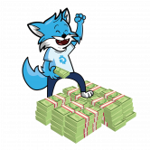 MoneyHero MoneyHero 于 2017 年在德国成立，当时名为“Geldhelden”，旨在为所有人提供金融教育。最初的社区现在有超过 7000 名成员。2021 年，该组织决定在 Tezos 上建
Monopoly Finance Monopoly 是 Polygon 上的去中心化收益农场，主要特点是收益农业。 该平台将随着时间的推移而发展，包括 IFO（Initial Farm Offering）等功能，然后是基
Pegasus Republic 飞马共和国 - 你决定。鲍勃·霍斯曼是谁？ 一个去中心化的自治代币，社区控制通货膨胀、税收、利息和燃烧率。 Pegasus Republic 是 SafeMoon 合约的一个分支，它用社区投票取代
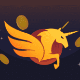 Pegasusdollar.finance Pegasus Dollar 是一种与 METF 挂钩的算法代币 该协议旨在扩大和收缩供应，类似于中央银行交易财政债务以稳定购买力的方式，没有任何基础或抵押风险。 PES 和 SPES 代币通过收
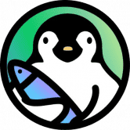 Penguin Finance Penguin Finance 是一个流动性即服务平台，为资金管理提供一站式解决方案，例如掉期、绑定和质押。协议可以利用绑定服务来获取流动性，而不是租用它。协议拥有的流
PolyWantsACracker 什么是 PolyWantsACracker ？ PolyWantsACracker 是 Polygon Network 上的一个收益农场。它是分层农业系统的第一层，第二层将包括通货膨胀农业代币和所有权代币。 Polygon (MATIC) 上排名第一的 AMM 和收益农场。 我很开
PolyWAVE 什么是 PolyWAVE ？ Polywave 是一个由 surf.finance 生态系统支持的项目。通过持有 WAVE，您就拥有了金库的所有权。WAVE 最初可以通过使用 matic/wave 质押单个资产或 LP 来耕种。产生的
PolyWeed Finance 什么是 PolyWeed 金融？ PolyWeed 是一个全新的 DeFi Yield Farming 平台，活跃在最近发展的 Polygon 网络上。我们是一个新的开发者团队，愿意在去中心化金融的非凡和高速世界中带来创新和改
PolyWise 什么是 PolyWise ？ PolyWise Finance是Polygon网络上的下一代收益农业协议，具有许多独特和创造性的功能，使您能够获得被动收益。 在 polywise 上，您将能够在我
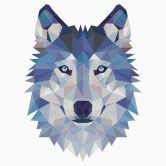 PolyWolf 什么是 PolyWolf ？ PolyWolf 是一个在 Matic 上运行的去中心化收益农场，具有许多其他功能，例如收益聚合器和 wolfpack 功能。 我们正在尝试做的是创建最终的去中心化平台，可以满足
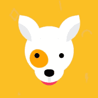 PolyWoof 什么是 PolyWoof ？ 欢迎来到 PolyWoof，Polygon 网络上最可爱的社区驱动的 DeFi 生态系统！ 我们最近推出了我们的收益农场，您可以在其中质押代币以在
PolyYeld Finance 什么是 PolyYeld 金融？ Polyyeld Finance 是 Polygon Network 上的下一代收益农业协议。 PolyYeld Finance是Polygon网络上的下一代收益农业协议，具有许多独特和创造性的功能，使您
PolyYeld Finance V2 什么是 PolyYeld Finance V2 ？ PolyYeld Finance 是 Polygon 网络上的下一代单产农业协议 PolyYeld Finance是Polygon网络上的下一代收益农业协议，具有许多独特和创造性的功能，使您
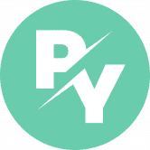 PolyYield Finance 什么是 聚会金融？ PolyYield Finance是PolyYeld（Polygon网络上的下一代Yield农业协议）的1：1分叉，具有更低的存款费用和基于开
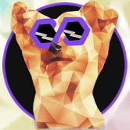 PolyYork Finance 什么是 多羊毛金融？ 我们的象征是约克郡梗犬的孟买狗。我们的目标是建立一个稳定且公平的盈利农场。模因狗爱好者肯定会感谢我们。公平发布于 2021 年 7 月 29
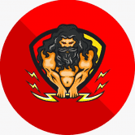 PolyZeus Finance 什么是 PolyZeus 财务？ 你好！我们是 PolyZeus，Polygon 上的第一个高价值农场。你可能想知道，“什么是高产农场！” 当然是有效的问题，让我们解
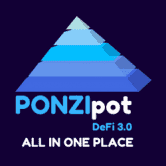 PONZIPOT 什么是 PONZIPOT ？ PONZIPOT是一群成员共享一个罐子，根据每个人获胜的角色参与贡献和分配收益。每个 POT 本身就是一个 DAO，它结合了 DEFI 和 GOVERNANCE 的目的。 DEFI
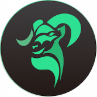 Ram Protocol Ram 协议是 ThunderCore 链上的去中心化非托管借贷协议。存款人可以通过借贷资产赚取利息和 Ram 代币，而借款人支付利息是为了在赚取 Ram 代币的同时借入资产。Ram 旨在
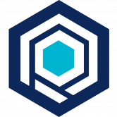 RAMP DEFI RAMP DEFI 是一个优化的抵押稳定币借贷平台，通过在 Binance Smart Chain 和 Polygon 中释放稳定币流动性并同时获得高收益，以及包括 Ethereum、Solana 和 Polkadot 在内的新区
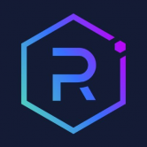 Raydium Raydium 是建立在 Solana 区块链上的自动化做市商 (AMM)，它利用 Serum 去中心化交易所 (DEX) 的中央订单簿来实现闪电般的交易、共享流动性和赚取收益的新功能。 👽 Raydium 为何
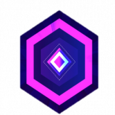 Rcubev2 RCUBE V2 是 RETRO DEFI 生态系统的下一次进化。它结合了 DEFI 2.0 机制和 REBASE 协议的最新技术。 我们称其为 RAC 协议或 RCUBE 自动复合协议。 RAC 协议赋予 RCUBE 持有者通过持有钱包进行自动
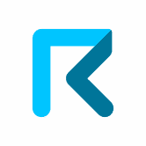 Request Invoicing Request (REQ) 是一套基于区块链的金融应用程序套件，专用于加密优先的公司。Request Invoicing 允许从自由职业者到小型企业和组织的任何人在通用、分散的网络中创
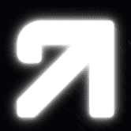 Reverse Protocol RVRS 什么是反向？↗ DeFi 2.0 协议，FaaS（农业即服务）通过社区管理的金库为 $RVRS 质押者产生被动收入——利润每周以 $UST 空投。 我们还在自动复合和每周债券池中提
Revoluzion dApp 多个 dApp 集成，包括仪表板、投资组合、dex 互换和买入/卖出限价单。 Multi-DApp 生态系统的未来就在这里，一场革命！全面的 DApp 集成，包括我们基于网络的 Play-to-Earn 游戏 A
Ricochet Ricochet Exchange 专注于生产新颖的工具，允许人们使用 Superfluid 的金融框架实时投资他们的加密资产。 rexMarket - 弹跳| 流媒体交换 该项目涉及创建和维护一个支持 在 Polygon 上自动实时投资
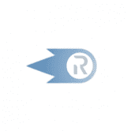 Ricochet Exchange Ricochet 将权力掌握在被动投资者手中。 Ricochet 使投资者能够通过单笔交易设置美元成本平均 (DCA)。用户可以在流中自动买卖加密货币，从而获得隐私、安全和低费
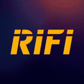 Rikkei Finance Rikkei Finance是一个具有跨平台借贷、NFT 和 P2P 保险的革命性 DeFi 生态系统。 结构良好的 DeFi 协议 在 Rikkei Finance Planet 下，有 5 个主要区域：体育和娱乐中心、农业区、
SwapMatic SwapMatic 是 100% 去中心化的服务。 任何人 - 可以创建交易所 - 添加或删除流动性 - 获得 0.3% 的池奖励 - 利用现有的流动性池 - 围绕核心工厂合约开发总能从市场中找到最优
TOFFEE SAFEFARM 什么是太妃糖安全农场？ TOFFEE SAFEFARM 是 BSC 上第一个用于再膨胀代币的 YIELD FARMING……它是一个促进复合自动化和单产农业的平台。 TOFFEE 使用各种策略来帮助用户通
TofuSwap TofuDefi 是一种无需许可的去中心化 DeFi 解决方案，它将结合多个独立的 DeFi 协议。 第一个是 TofuSwap。 TofuSwap 是一种用于在 TRON 网络上自动进行代币交换的协议。 TofuSwap 基